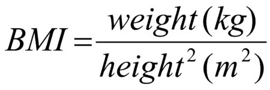

Body mass index (BMI) is a value derived from the mass (weight) and height of a person. The BMI is defined as the body mass divided by the square of the body height, and is universally expressed in units of kg/m2, resulting from mass in kilograms and height in metres.
The BMI may be determined using a table[note 1] or chart which displays BMI as a function of mass and height using contour lines or colours for different BMI categories, and which may use other units of measurement (converted to metric units for the calculation).
The BMI is a convenient rule of thumb used to broadly categorize a person as underweight, normal weight, overweight, or obese based on tissue mass (muscle, fat, and bone) and height. That categorization is the subject of some debate about where on the BMI scale the dividing lines between categories should be placed.[1] Commonly accepted BMI ranges are underweight ( under 18.5 kg/m2), normal weight (18.5 to 25), overweight (25 to 30), and obese (over 30).
BMIs under 20 and over 25 have been associated with higher all-causes mortality, with the risk increasing with distance from the 20–25 range.
Adolphe Quetelet, a Belgian astronomer, mathematician, statistician, and sociologist, devised the basis of the BMI between 1830 and 1850 as he developed what he called "social physics". The modern term "body mass index" (BMI) for the ratio of human body weight to squared height was coined in a paper published in the July 1972 edition of the Journal of Chronic Diseases by Ancel Keys and others. In this paper, Keys argued that what he termed the BMI was "...if not fully satisfactory, at least as good as any other relative weight index as an indicator of relative obesity".
The interest in an index that measures body fat came with observed increasing obesity in prosperous Western societies. Keys explicitly judged BMI as appropriate for population studies and inappropriate for individual evaluation. Nevertheless, due to its simplicity, it has come to be widely used for preliminary diagnoses. Additional metrics, such as waist circumference, can be more useful.
